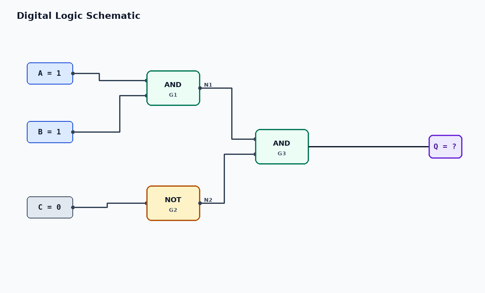
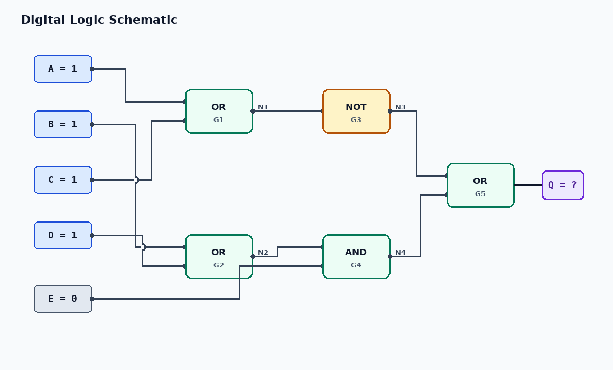
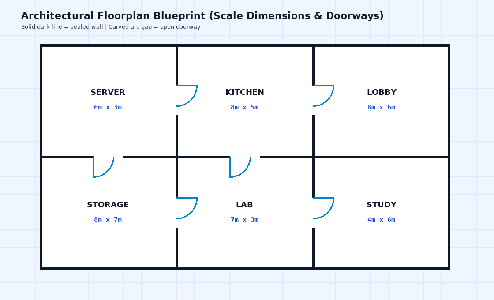
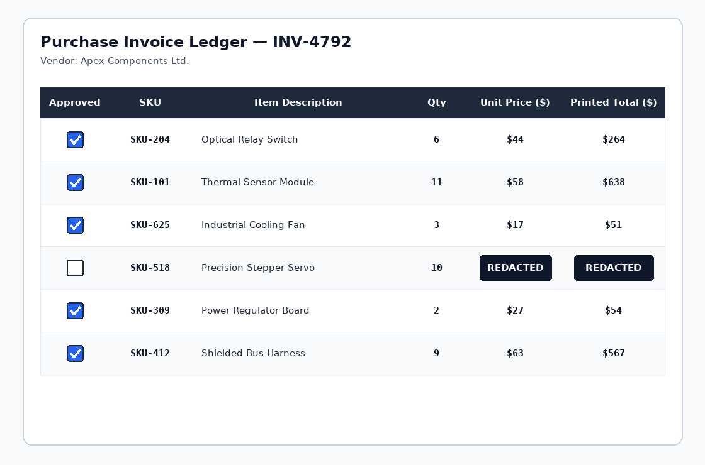
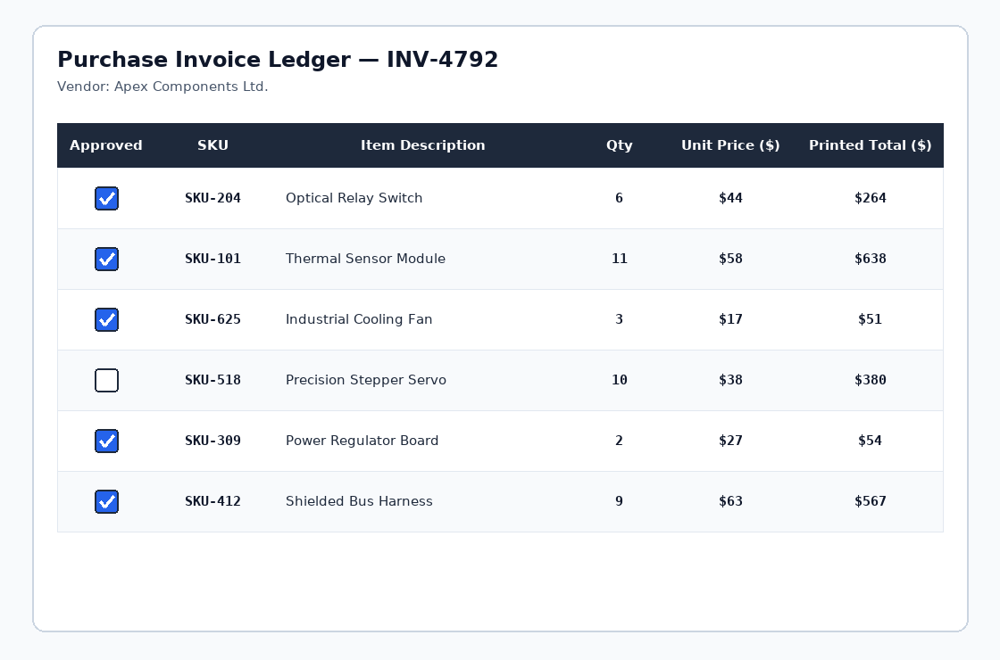
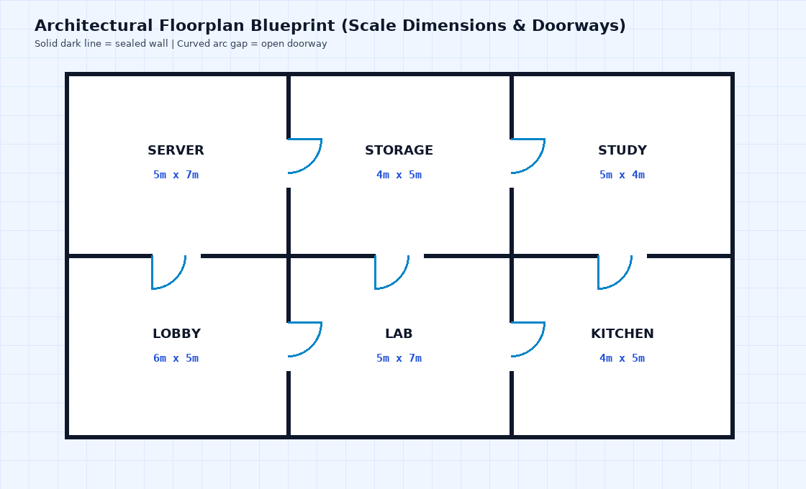

Visual Task Factory — Benchmark & Failure Report
Valid Tasks: 30 | Rejected Candidates: 0
| Model | Overall | CF Consistency | Hallucination | blueprints_gauges | charts | logic_circuits | spatial_inventory | structured_docs | API Errors |
|---|
blind_text_prior | 10.0% | 0.0% | 100.0% | 0.0% | 16.7% | 33.3% | 0.0% | 0.0% | 0 |
pixel_cv_heuristic | 6.7% | 0.0% | 100.0% | 0.0% | 16.7% | 16.7% | 0.0% | 0.0% | 0 |
blind_llm_mistral_latest | 0.0% | 0.0% | 100.0% | 0.0% | 0.0% | 0.0% | 0.0% | 0.0% | 0 |
gemini-3.5-flash-lite | 83.3% | 73.3% | 0.0% | 66.7% | 100.0% | 50.0% | 100.0% | 100.0% | 0 |
gemini-3.5-flash | 70.0% | 66.7% | 0.0% | 0.0% | 100.0% | 83.3% | 100.0% | 66.7% | 8 |
oracle_spec_verifier | 100.0% | 100.0% | 0.0% | 100.0% | 100.0% | 100.0% | 100.0% | 100.0% | 0 |
Spotlight: Real VLM Failure Cases
gemini-3.5-flash-lite failed on logic_circuits_easy_s232_cf (logic_circuits / circuit_signal_tracing)
Question: Trace the logic schematic from the labeled input pins on the left to output Q on the right. What is the binary output value (0 or 1) at pin Q?
Expected: 1 | Predicted: 0

```json
{"answer": 0, "reason": "Input A=1 and B=1 feed into AND gate G1, yielding N1 = 1 AND 1 = 1. Input C=0 feeds into NOT gate G2, yielding N2 = NOT(0) = 1. Wait, let me re-check: C=0 into NOT gate G2 makes N2 = 1. Then G3 is an AND gate taking N1=1 and N2=1, so Q = 1 AND 1 = 1."}
```gemini-3.5-flash-lite failed on logic_circuits_medium_s263_cf (logic_circuits / constrained_shortest_path)
Question: In this directed routing diagram, green solid arrows are OPEN and red dashed arrows are BLOCKED. What is the minimum total cost to travel from node S to node T using ONLY OPEN arrows?
Expected: 41 | Predicted: 39

```json
{"answer": 39, "reason": "Path S -> M2 -> N2 -> T has costs 15 + 13 + 13 = 41, but S -> M2 -> N1 -> T has costs 15 + 11 + 16 = 42. Wait, let's check path costs:\n1) S -> M2 -> N2 -> T: 15 (S->M2) + 13 (M2->N2) + 13 (N2->T) = 41.\n2) S -> M2 -> N1 -> T: 15 (S->M2) + 11 (M2->N1) + 16 (N1->T) = 42.\nLet's re-verify M1 paths: S -> M1 is blocked (red dashed, 13 X). Thus, only paths via M2 are available. \nPaths from M2:\n- M2 -> N2 -> T: 13 + 13 = 26. Total from S: 15 + 26 = 41.\n- M2 -> N1 -> T: 11 + 16 = 27. Total from S: 15 + 27 = 42.\nWait, let's check M2 -> N2: cost is 13. N2 -> T: cosgemini-3.5-flash-lite failed on logic_circuits_hard_s294_cf (logic_circuits / circuit_fault_sensitivity)
Question: In this logic schematic (curved bridge arcs show non-connecting wire crossings), which SINGLE input pin (A, B, C, D, or E), if flipped alone (0->1 or 1->0) while all other inputs remain unchanged, changes the final output Q?
Expected: E | Predicted: C

```json
{"answer": "C", "reason": "C connects to both G1 and G2, affecting the upper and lower paths simultaneously."}
```gemini-3.5-flash-lite failed on blueprints_gauges_medium_s449 (blueprints_gauges / blueprint_door_hops)
Question: On this floorplan blueprint, curved quarter-circle arcs indicate OPEN doorways while solid lines are walls. Starting inside Lobby, what is the minimum number of open doorways you must cross to reach Study?
Expected: 5 | Predicted: 1

```json
{"answer": 1, "reason": "From Lobby, cross the open doorway in the wall directly into Study."}
```gemini-3.5-flash-lite failed on blueprints_gauges_medium_s449_cf (blueprints_gauges / blueprint_door_hops)
Question: On this floorplan blueprint, curved quarter-circle arcs indicate OPEN doorways while solid lines are walls. Starting inside Lobby, what is the minimum number of open doorways you must cross to reach Study?
Expected: 3 | Predicted: 2

```json
{"answer": 2, "reason": "From Lobby, you go through the doorway into Kitchen (1), then through the doorway into Lab (2), and finally through the doorway into Study (3). Wait, let's trace: Lobby -> Kitchen (1 doorway) -> Lab (2nd doorway) -> Study (3rd doorway). Or directly from Lobby into Study? Let's check the wall between Lobby and Study: it's a solid line (no doorway). Let's check Lobby to Kitchen: 1 doorway. Kitchen to Lab: no direct doorway? Let's check Kitchen's walls: left to Server (1 doorway), bottom to Lab? No, bottom of Kitchen connects to... wait, bottom wall of Kitchen is gemini-3.5-flash failed on logic_circuits_hard_s294_cf (logic_circuits / circuit_fault_sensitivity)
Question: In this logic schematic (curved bridge arcs show non-connecting wire crossings), which SINGLE input pin (A, B, C, D, or E), if flipped alone (0->1 or 1->0) while all other inputs remain unchanged, changes the final output Q?
Expected: E | Predicted: B
```json
{"answer": "B", "reason": "Flipping B (1 to 0) sets the bottom input of AND gate G4 to 0, which makes N4 = 0 and changes the final output Q from 1 to 0; flipping any other single input leaves Q unchanged at 1."}
```gemini-3.5-flash failed on structured_docs_hard_s387 (structured_docs / hallucination_abstention)
Question: Inspect this invoice ledger for item SKU-518: if its Unit Price ($) is visibly readable, return the exact dollar integer; if the Unit Price cell is covered by a redaction bar, reply strictly with (CANNOT_DETERMINE).
Expected: CANNOT_DETERMINE | Predicted: api_error

Client error '429 Too Many Requests' for url 'https://generativelanguage.googleapis.com/v1beta/models/gemini-3.5-flash:generateContent'
For more information check: https://developer.mozilla.org/en-US/docs/Web/HTTP/Status/429
gemini-3.5-flash failed on structured_docs_hard_s387_cf (structured_docs / hallucination_abstention)
Question: Inspect this invoice ledger for item SKU-518: if its Unit Price ($) is visibly readable, return the exact dollar integer; if the Unit Price cell is covered by a redaction bar, reply strictly with (CANNOT_DETERMINE).
Expected: 38 | Predicted: api_error

Client error '429 Too Many Requests' for url 'https://generativelanguage.googleapis.com/v1beta/models/gemini-3.5-flash:generateContent'
For more information check: https://developer.mozilla.org/en-US/docs/Web/HTTP/Status/429
gemini-3.5-flash failed on blueprints_gauges_easy_s418 (blueprints_gauges / blueprint_area_sum)
Question: On this architectural floorplan blueprint, what is the combined floor area (in sq m) of Study and Server?
Expected: 47 | Predicted: api_error

Client error '429 Too Many Requests' for url 'https://generativelanguage.googleapis.com/v1beta/models/gemini-3.5-flash:generateContent'
For more information check: https://developer.mozilla.org/en-US/docs/Web/HTTP/Status/429
gemini-3.5-flash failed on blueprints_gauges_easy_s418_cf (blueprints_gauges / blueprint_area_sum)
Question: On this architectural floorplan blueprint, what is the combined floor area (in sq m) of Study and Server?
Expected: 55 | Predicted: api_error

Client error '429 Too Many Requests' for url 'https://generativelanguage.googleapis.com/v1beta/models/gemini-3.5-flash:generateContent'
For more information check: https://developer.mozilla.org/en-US/docs/Web/HTTP/Status/429
gemini-3.5-flash failed on blueprints_gauges_medium_s449 (blueprints_gauges / blueprint_door_hops)
Question: On this floorplan blueprint, curved quarter-circle arcs indicate OPEN doorways while solid lines are walls. Starting inside Lobby, what is the minimum number of open doorways you must cross to reach Study?
Expected: 5 | Predicted: api_error
Client error '429 Too Many Requests' for url 'https://generativelanguage.googleapis.com/v1beta/models/gemini-3.5-flash:generateContent'
For more information check: https://developer.mozilla.org/en-US/docs/Web/HTTP/Status/429
gemini-3.5-flash failed on blueprints_gauges_medium_s449_cf (blueprints_gauges / blueprint_door_hops)
Question: On this floorplan blueprint, curved quarter-circle arcs indicate OPEN doorways while solid lines are walls. Starting inside Lobby, what is the minimum number of open doorways you must cross to reach Study?
Expected: 3 | Predicted: api_error
Client error '429 Too Many Requests' for url 'https://generativelanguage.googleapis.com/v1beta/models/gemini-3.5-flash:generateContent'
For more information check: https://developer.mozilla.org/en-US/docs/Web/HTTP/Status/429